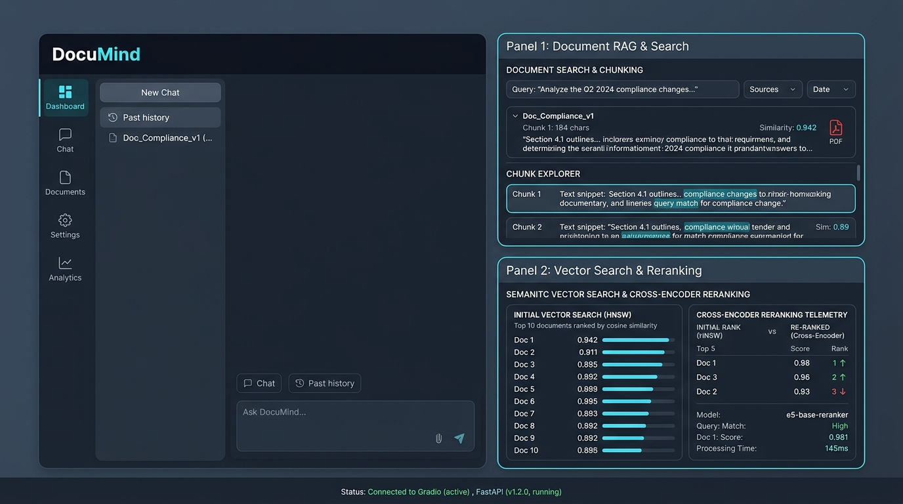
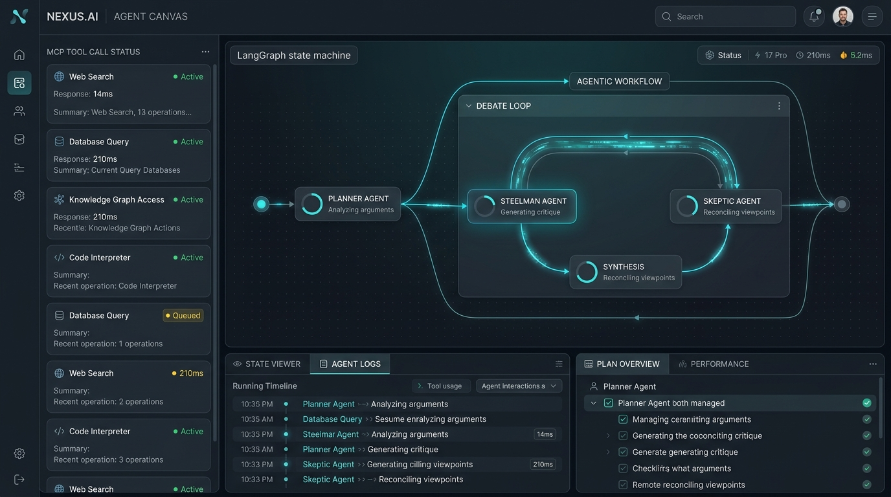
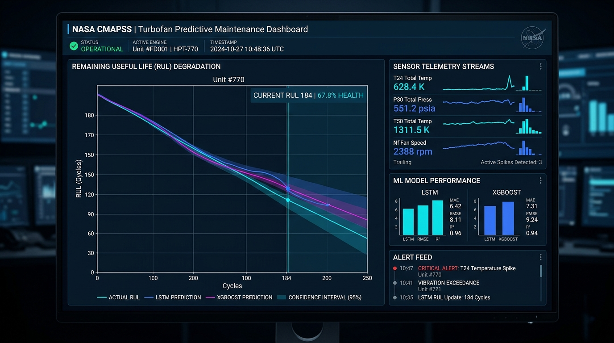
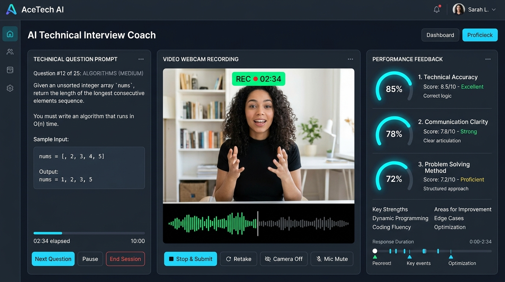
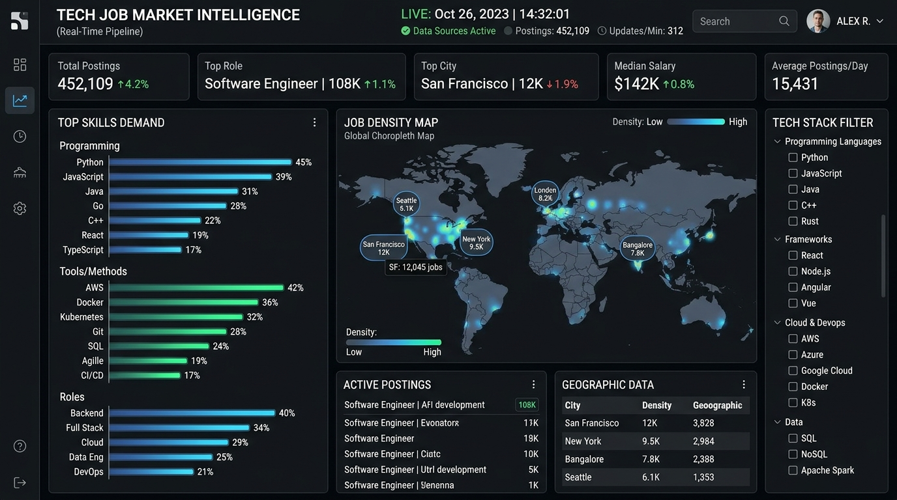
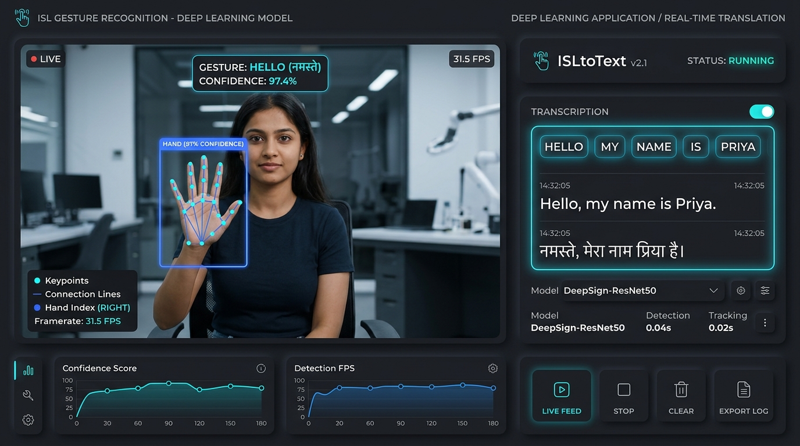
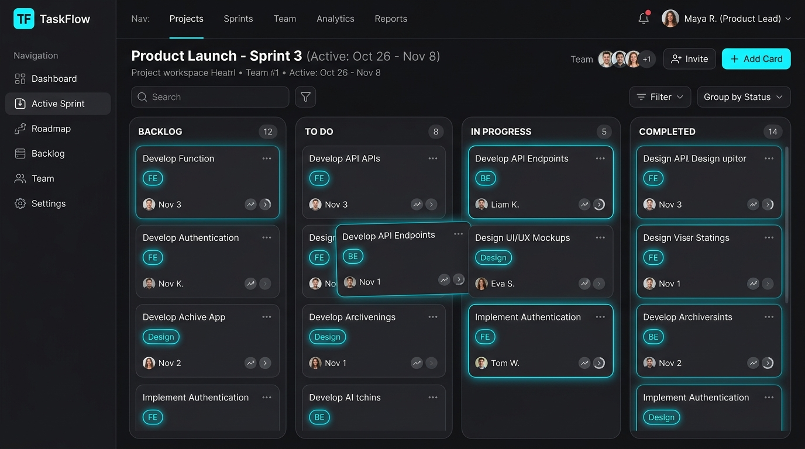
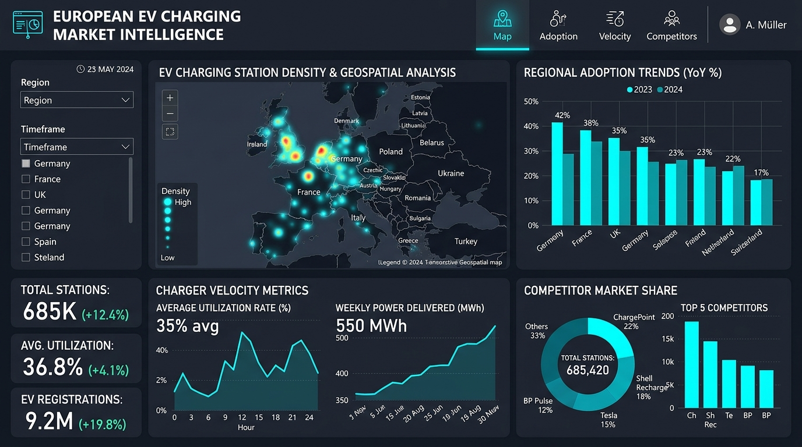
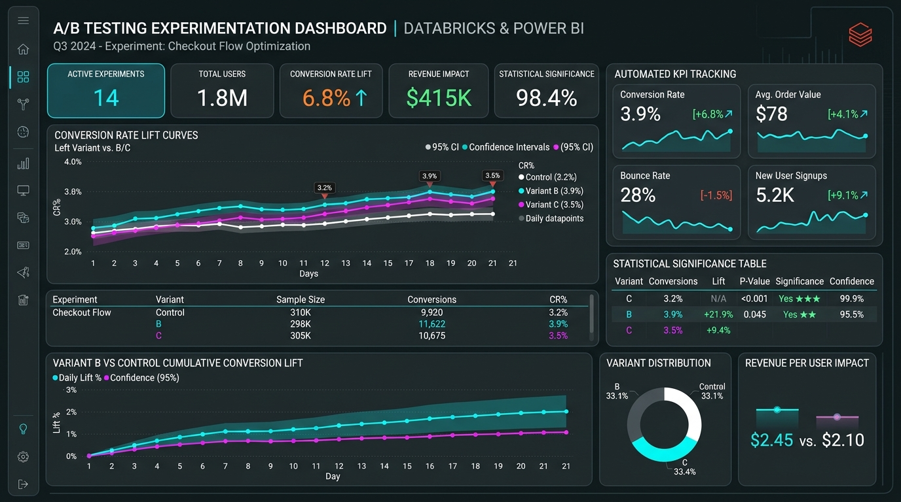

Agentic RAGProduction Grade Advanced RAG
Agentic RAG architecture featuring an LLM query router, query transformation & fusion, and Cross-Encoder (ms-marco-MiniLM) reranking post-processing to minimize hallucinations.
Software Engineer with 3.2 years of experience in backend development, enterprise data integration, and agentic AI architectures. Worked with SAP, REST APIs, and ETL pipelines for industrial clients. Currently pursuing M.Sc. in Computer Science (AI focus) at Universität Stuttgart.
3.2 years of engineering experience delivering mission-critical API integrations, data transformation pipelines, and high-performance distributed systems.
Hi, I’m Mrudul. I am a Software Engineer with 3.2 years of professional experience in backend development, distributed connection pooling, and enterprise data integration at eQ Technologic.
Throughout my industry career, I have owned the end-to-end design and delivery of 50+ REST APIs on eQube-MI, resolved critical concurrency and pool exhaustion bottlenecks in enterprise Java architectures, and orchestrated complex cross-system data exchanges across SAP ERP, Solumina, Teamcenter, and PTC Windchill for major industrial clients.
Currently, I am pursuing my M.Sc. in Computer Science with a focus in Artificial Intelligence at Universität Stuttgart in Germany, expanding my capabilities into Autonomous Systems, LangGraph multi-agent orchestration, and enterprise Agentic RAG.
Delivered 50+ REST APIs on eQube-MI, SAP ERP Solumina sync, and OOTB BOM pipelines.
Boosted throughput by 26% via Apache Ignite caching & cut HikariCP tickets by 75%.
Architecting LangGraph multi-agent pipelines, MCP tool servers, and advanced RAG.
English C2 (Proficient), German B1 transitioning to B2, Jira, and CI/CD pipelines.
$ cat professional_profile.json
{
"name": "Mrudul Nagrale",
"role": "Software Engineer (3.2 yrs experience)",
"education": "M.Sc. Computer Science (AI focus) @ Univ. Stuttgart",
"languages": ["Python", "Java", "SQL", "Node.js", "C++", "C"],
"enterprise_stack": {
"integration": ["eQube-MI", "50+ REST APIs", "SAP ERP", "Solumina"],
"backend": ["Apache Ignite", "Spring Security", "HikariCP", "PostgreSQL"],
"ai_ml": ["LangChain", "LangGraph", "MCP", "Agentic RAG"]
},
"spoken_languages": {
"english": "C2 (Bilingual/Proficient)",
"german": "B1 transitioning to B2"
}
}$ git status
On branch main. 3.2 yrs verified enterprise impact.
Enterprise backend architecture, agentic AI frameworks, cross-system digital thread integrations, and resilient systems engineering.
A showcase of production-ready systems, scalable cloud services, and interactive web experiences.

Agentic RAGAgentic RAG architecture featuring an LLM query router, query transformation & fusion, and Cross-Encoder (ms-marco-MiniLM) reranking post-processing to minimize hallucinations.

LangGraph & MCPHierarchical multi-agent research system with LangGraph state machines, steelman vs. skeptic debate verification loop, and Model Context Protocol (MCP) tool integration.

ML & RUL PipelineNASA CMAPSS turbofan engine Remaining Useful Life (RUL) estimation with 15+ rolling temporal features, Random Forest, XGBoost, and PyTorch LSTM tracked via MLflow.

Full Stack & LLMContainerized full-stack application with Django, PostgreSQL, and Docker Compose, featuring dynamic interview prompts, prompt orchestration, and an HTMX reactive SPA.

Data EngineeringContinuous Python ingestion from ArbeitNow API, skill normalization against tech checklists, PostgreSQL JSONB raw archival, and indexed FastAPI query service.

Computer VisionCNN gesture classification on custom 35-class dataset achieving 97% accuracy, extending static hand recognition into continuous real-time sentence translation via Flask & OpenCV.

Next.js & PostgreSQLFull-stack task management platform with Next.js App Router, drag-and-drop Kanban boards, role-based team workspaces, and Node.js REST API with Prisma ORM.

Geospatial & BIETL data pipeline and geospatial Power BI dashboard integrating 100K+ records across Europe to analyze charging density, adoption, and station expansion.

Databricks & A/BDatabricks and Power BI analytics dashboard processing 100K+ records, evaluating A/B testing statistical significance, and tracking automated KPI metrics.
 Django Web App
Django Web App
Locally hosted competition quiz web app for large-scale college festival built with Django MVT architecture, session handling, SQLite, and custom routing.
A track record of delivering resilient software systems and driving measurable technical impact.
Owned end-to-end lifecycle of the Connection Management module, architected distributed clustering, and optimized enterprise connectivity infrastructure.
Designed and delivered enterprise integrations of 50+ REST APIs, cross-system data exchange pipelines, and automated testing frameworks.
Master's program specializing in Artificial Intelligence, Autonomous Systems, Machine Learning algorithms, and Agentic LLM systems.
Bachelor of Engineering in Information Technology completed with a Grade of 1.5 (German Equivalent / First Class with Distinction).
Open to ML Engineer, AI Developer, and Python Backend roles across Germany and Europe. I typically respond within 24 hours.
mrudulnagrale01@gmail.com
github.com/mrudul-999
linkedin.com/in/mrudul-nagrale
Stuttgart, Germany · Open to Remote / On-Site